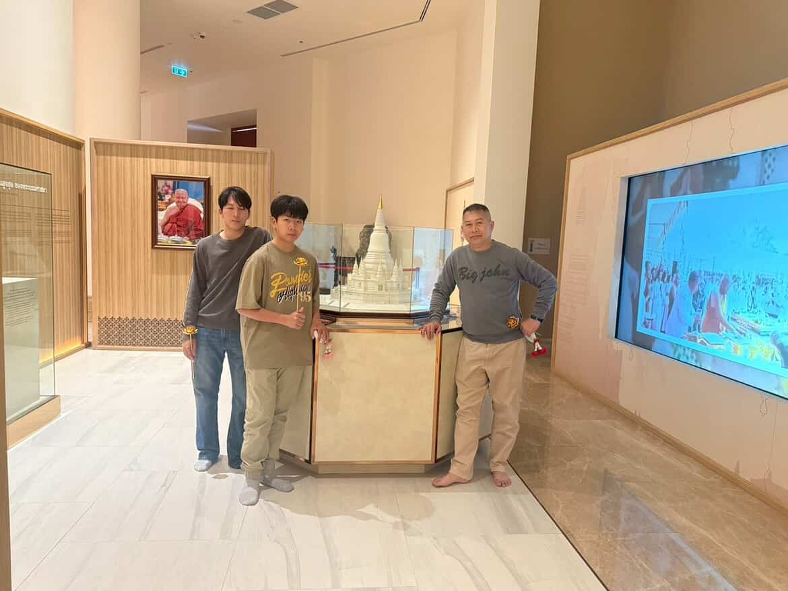
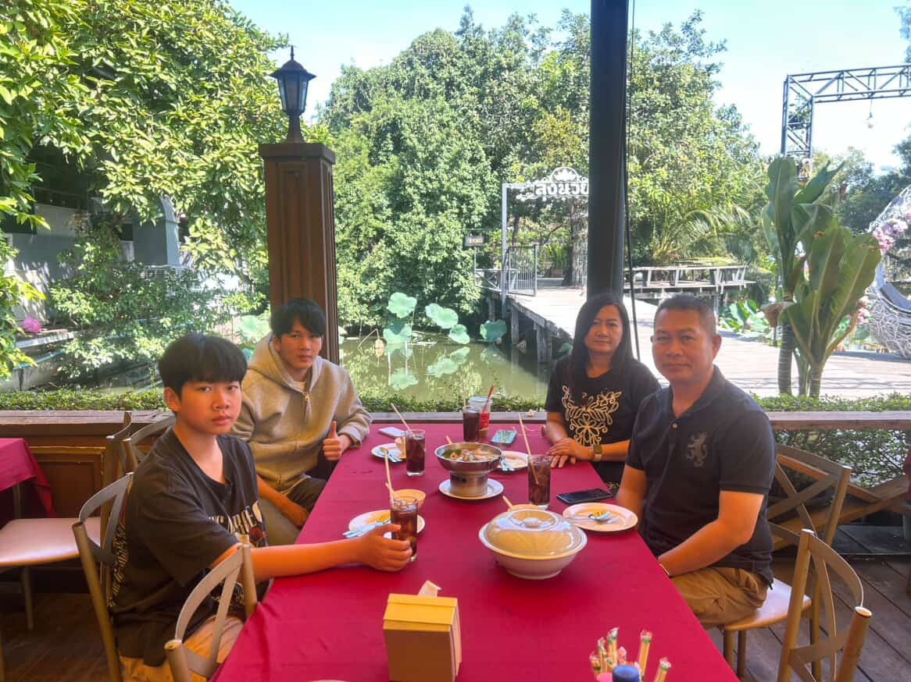
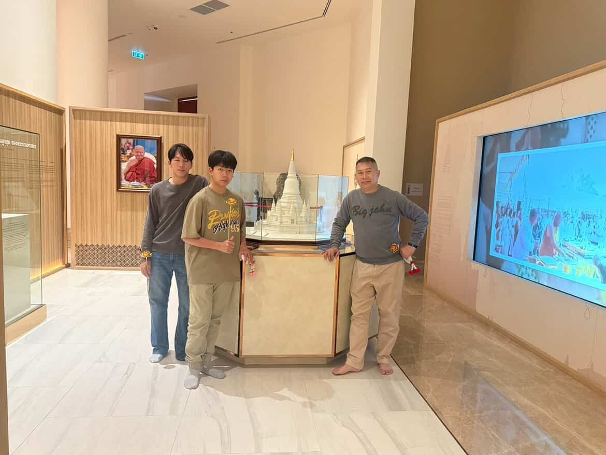
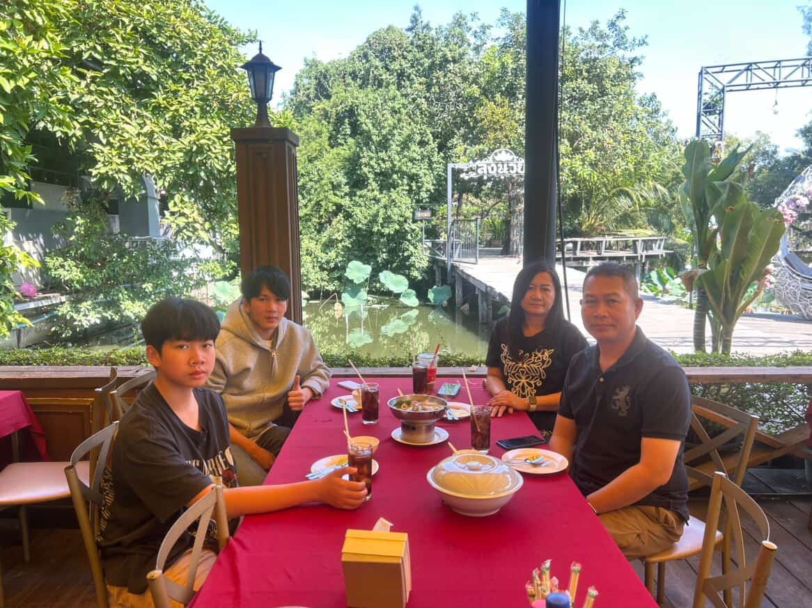

วันพ่อแห่งชาติ👨🏻
สิ่งที่อยากจะบอกพ่อ

พ่อครับผมอยากจะขอบคุณพ่อมากๆเลยครับที่เลี้ยงดูผมมาจนโตขนาดนี้ผมจะกตัญญูตั้งใจเรียนเพื่อตอบเเทนพ่อครับ

 



บทกลอนมอบให้พ่อ
อนุสรณ์กลอนรักฝากให้พ่อเป็นรอยต่อสองภพจบประสาน
เมื่อพ่อจากลาไปไกลดวงมาลย์
ทั้งลูกหลานแม่ยังรักจักอาลัย